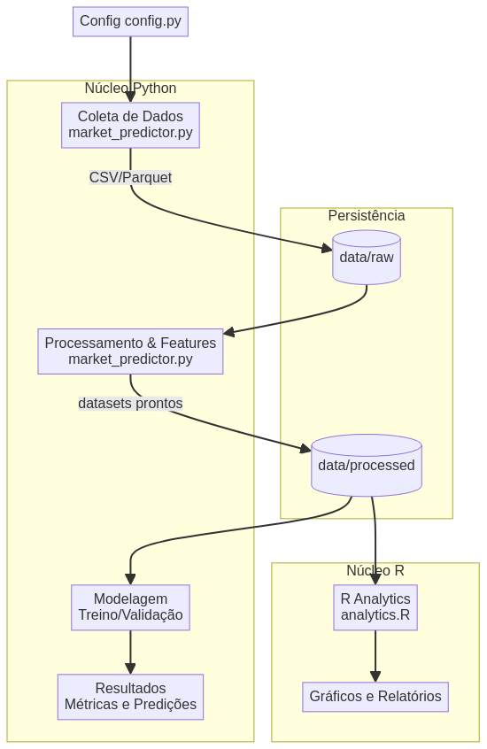

Sobre o Projeto
O Market Trend Predictor é um toolkit unificado em Python e R para coletar dados de mercado, construir features, treinar modelos preditivos e gerar análises reprodutíveis. O foco é em clareza, extensibilidade e um fluxo profissional para pesquisa e prototipagem.
Este projeto implementa um sistema avançado de previsão de tendências de mercado usando vários modelos de machine learning e estatísticos, incluindo ARIMA, LSTM, Prophet e métodos de ensemble. Ele visa fornecer previsões precisas para tendências de mercado e indicadores financeiros, oferecendo insights valiosos para investidores e analistas.
Para mais detalhes, visite o repositório GitHub.
Diagrama do Pipeline/Arquitetura
Funcionalidades
- Ingestão de dados históricos de mercado: Coleta dados de fontes como Alpha Vantage e Yahoo Finance com cache local.
- Engenharia de atributos: Criação de janelas temporais, retornos e indicadores técnicos simples.
- Treinamento e avaliação de modelos: Utiliza modelos clássicos de ML para classificação/regressão de tendência.
- Relatórios e visualizações: Geração de gráficos e análises em R sobre correlação, distribuição e desempenho do modelo.
Tecnologias Utilizadas
Python
Processamento de backend e algoritmos de ML
R
Análise estatística e visualização
HTML5/CSS3/JavaScript
Interface moderna e responsiva
Instalação e Configuração
Python
Requisitos: Python 3.9+
# Clonar e entrar no projeto
git clone https://github.com/galafis/Market-Trend-Predictor.git
cd Market-Trend-Predictor
# Ambiente virtual e dependências
python -m venv venv
# macOS/Linux
source venv/bin/activate
# Windows (PowerShell)
# venv\Scripts\Activate.ps1
pip install -r requirements.txtR
Requisitos: R 4.0+
Rscript -e "install.packages(c(\'ggplot2\',\'dplyr\',\'corrplot\',\'plotly\'), repos=\'https://cloud.r-project.org\')"Exemplos de Uso
Para exemplos detalhados de coleta de dados, engenharia de features e análises em R, consulte o README.md no GitHub.
Resultados Esperados
O projeto visa fornecer métricas de classificação robustas e gráficos ilustrativos, como heatmaps de correlação e linhas de Previsão vs. Real. Para mais informações, veja o README.md.